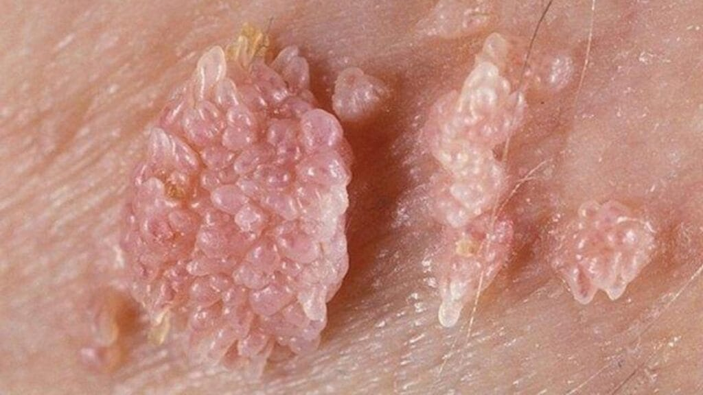

O HPV (sigla em inglês para Human Papillomavirus, ou Papilomavírus Humano) é um vírus muito comum que infecta a pele e as mucosas (como a boca, a garganta e a região genital). Existem mais de 200 tipos diferentes de HPV. A grande maioria deles é inofensiva e combatida pelo próprio sistema imunológico, mas alguns tipos específicos merecem bastante atenção.
A principal forma de transmissão é por meio do contato direto pele com pele durante a atividade sexual (vaginal, anal ou oral), mesmo que não haja penetração completa. Ele também pode ser passado pelo uso compartilhado de objetos íntimos em casos raros.
A infecção pelo HPV acontece de forma muito simples e direta: o vírus entra no corpo através de microlesões — pequenos cortes, arranhões ou fissuras na pele ou nas mucosas que geralmente são microscópicos e que nós nem sentimos. Quando o vírus ultrapassa essa barreira da pele, ele se instala nas células da camada mais profunda da epiderme e começa a se multiplicar.
Vacina: É a melhor forma de prevenção. No Brasil, ela é distribuída gratuitamente pelo SUS para meninas e meninos (geralmente entre 9 e 14 anos) e para grupos específicos em idades mais avançadas. A vacina protege contra os tipos mais perigosos do vírus. Exame Papanicolau: Para quem tem útero, esse exame de rotina feito no ginecologista consegue detectar qualquer alteração nas células muito antes de virar um câncer, permitindo um tratamento precoce.
Tratamento: Não existe um remédio para eliminar o vírus do corpo (geralmente o próprio organismo se livra dele com o tempo), mas existem tratamentos excelentes para as lesões e verrugas que ele causa, como pomadas, cauterização ou pequenas cirurgias.
